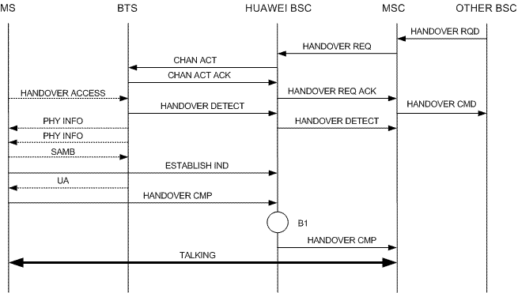

Measurement Counters
| ID | Counter | Description |
|---|---|---|
| 1278089417 | CELL.LOCALSWITCH.LOOP.CALL.DETECT | R380:Number of Call Detect Messages Originated during Local Switching |
Description
After a call is picked up, an incoming BSC handover for CS services is complete, or an intra-BSC handover is complete, the BSC selects a BSS local switching policy and determines whether the following conditions for initiating BSC or BTS local switching are met:
1. The license supports BSC or BTS local switching.
2. The general policy of BSS local switching supports BSC or BTS local switching.
3. The prefix of the called number is beyond the BSC or BTS closing number segment.
4. The BTS and channels supports local switching.
5. After an intra-BSC handover is complete, BSS Local Switching General Strategy is set to BTS Only, the source cell and target cell for the handover are under different BTSs, and Flex Abis or IP transmission is used in the target cell.
If all the preceding conditions are met, the BSC checks whether the calling and called MSs are served by the same BSC.
This counter provides the Number of Call Detect Messages Originated during Local Switching.
Note:
The BSC or BTS local switching requires the support from the BTS software version.
Measurement point
After the BSC receives the CONNECT ACK message from the MSC in the MS terminated call procedure, as shown in Figure 1 (A1), or after the BSC receives the HANDOVER CMP message from the MS in the incoming BSC handover procedure, as shown in Figure 2 (B1), or after the BSC receives the HANDOVER CMP message from the MS in the intra-BSC handover procedure, as shown in Figure 3 (C1), the BSC selects the BSS local switch policy and determines whether the conditions for initiating BSC/BTS local switch are met. If the previous conditions are met and the ongoing call is of normal speech service, the BSC initiates call detection. In this case, this counter is measured in the cell where call detection is initiated.


Formula
None
Unit
None
Related Features
| Counter | Feature ID | Feature Name |
|---|---|---|
| CELL.LOCALSWITCH.LOOP.CALL.DETECT |
GBFD-117701 GBFD-117702 |
BSC Local Switch BTS Local Switch |